Актуальный проход по спорным Premium/free настройкам. Цель: заменить старые DATA GAP/NOT PROVEN на проверенные PASS/FAIL/WARN с live evidence, user-side и recipient-side проверками там, где действие влияет на другого пользователя.
Старт: 2026-05-09T08:50:38.016Z. Финиш: 2026-05-09T08:54:00.701Z. Rollback настроек: OK.
messagesOutPremium при лимите 1 не блокирует лишние отправки/доставку получателям
Проверить место применения лимита в /en/messages/create: счетчик должен блокировать sender response и не создавать доставляемое сообщение после лимита.
high
PREMIUM-EDIT-SENT-MESSAGE-001
editSentMessageOn включен, но у отправленного сообщения нет edit action
Искать в message item view/JS: рядом с исходящим сообщением нет action edit/update; также проверить backend route для редактирования.
medium
PREMIUM-TIMER-IN-MUTUAL-001
timerInMutualOn включен, но на mutual likes не найден видимый таймер
Проверить /connections/likes/mutual template и логику premium/free timer.
medium
PREMIUM-COUNTRY-PRICE-001
countryPremiumPriceOn не меняет price nodes на /en/balance/services#premium
Точный recheck без overlay: при countryPremiumPriceOn=1 и 0 блоки .feature-price/.feature-title одинаковые; rollback OK. См. raw/country-price-precise-recheck.json.
Evidence screenshots / доказательства
PASSПоля Premium присутствуют в live admin форме
Что тестировал: Проверка наличия спорных Premium/free полей в live admin DOM.
Что получил: Поля есть, тестировать можно через реальные form submit.
Как воспроизвести: Открыть /en/admin/settings/premium и проверить input[name="Settings[...]"].
Где смотреть Игорю: /en/admin/settings/premium PHP view + model Settings.
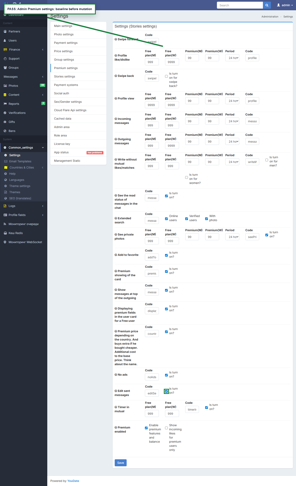
adminBaseline
PASSНастройки Premium сохраняются и читаются обратно
Что тестировал: Yii2 form submit с CSRF: поставить лимит сообщений 1 и включить спорные чекбоксы.
Что получил: Сохранение настроек подтверждено.
Как воспроизвести: POST обычной формы /en/admin/settings/premium, затем повторно открыть страницу.
Где смотреть Игорю: SettingsController action для premium settings и сохранение Settings[*].
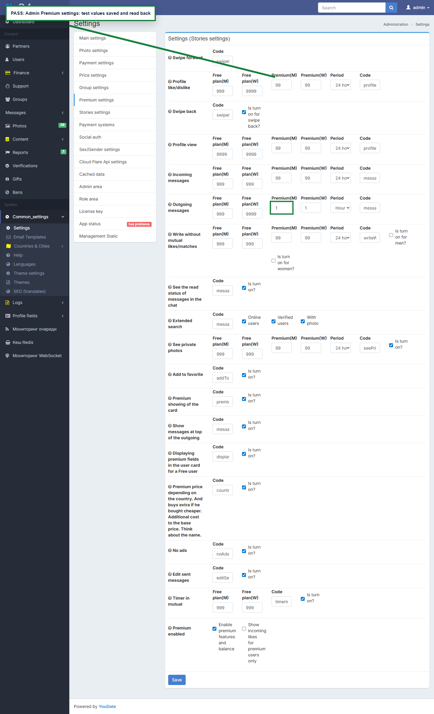
adminMutated
FAILЛимит messagesOutPremium проверен со стороны отправителя и получателей
Что тестировал: Premium user U182, limit=1, 4 попытки отправки разным получателям; затем вход в каждого получателя и поиск точного QA-текста.
Что получил: Лимит не удержал сценарий: больше 1 сообщения принято и/или доставлено получателям.
Как воспроизвести: Set messagesOutPremiumMen/Women=1, login-as U182, POST /en/messages/create 4 раза, затем login-as U166/U167/U168/U165 и проверить /en/messages.
Где смотреть Игорю: /en/messages/create, сервис лимитов messagesOutPremium*, доставка сообщения получателю.
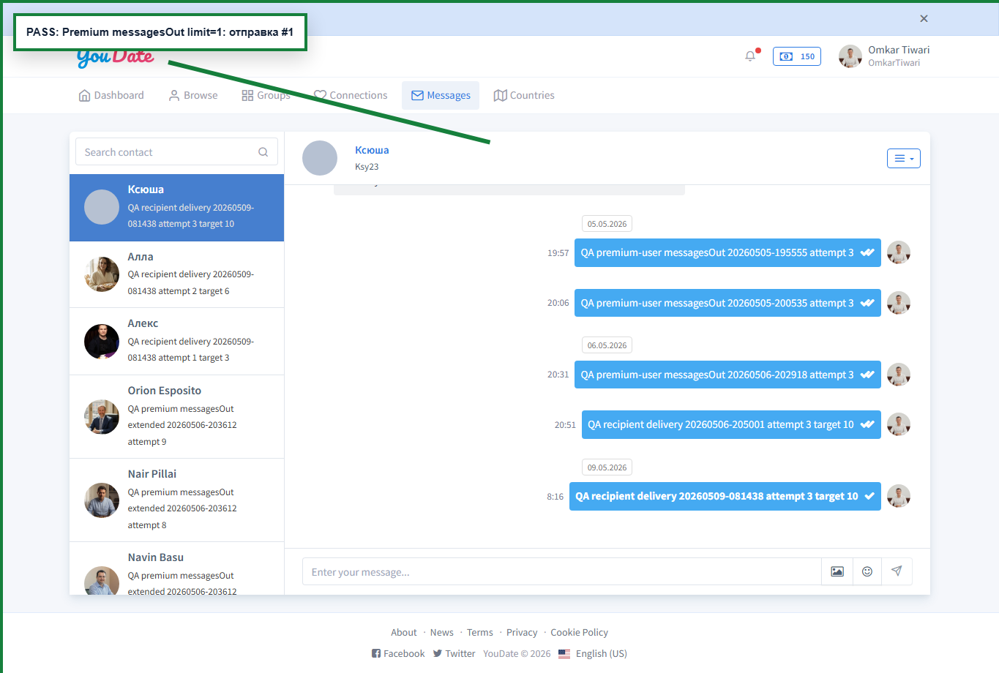
messageSend1
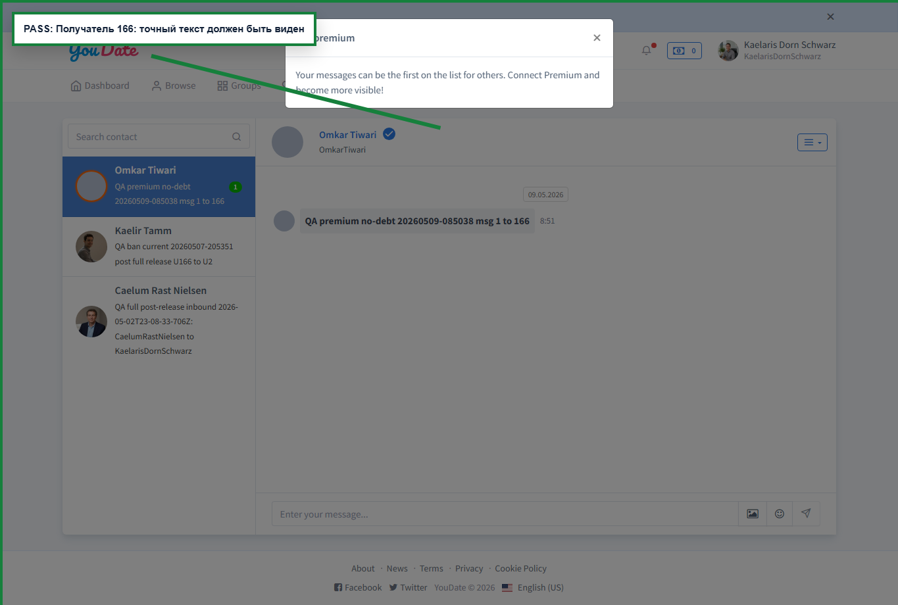
messageRecipient1
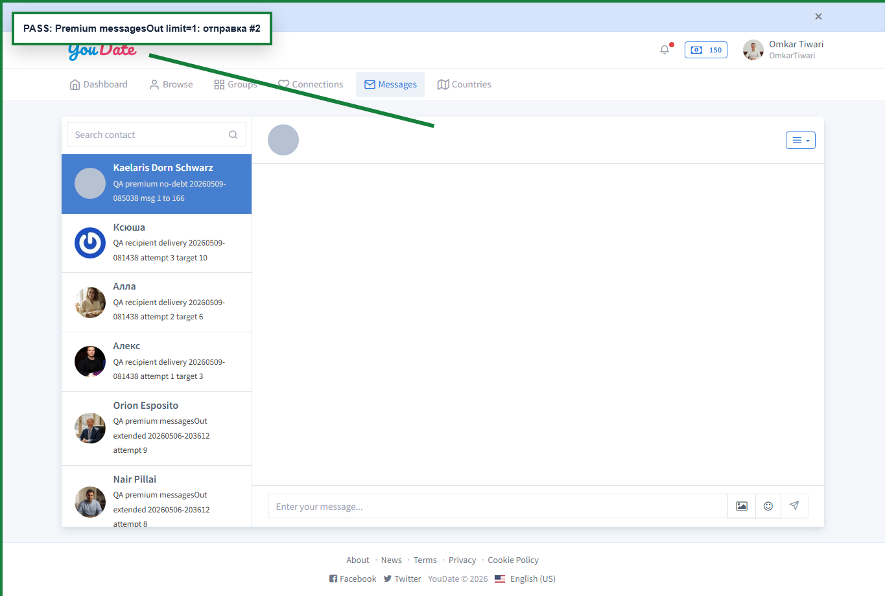
messageSend2messageRecipient2
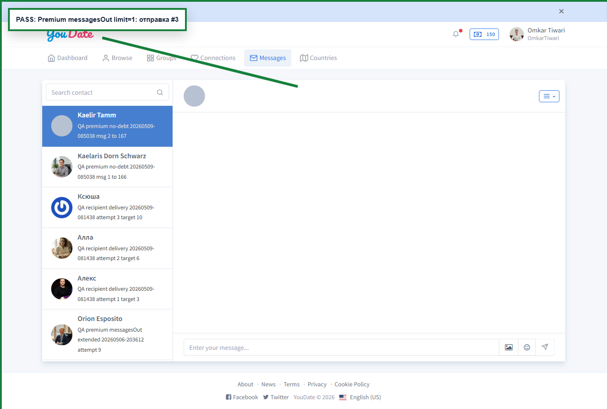
messageSend3
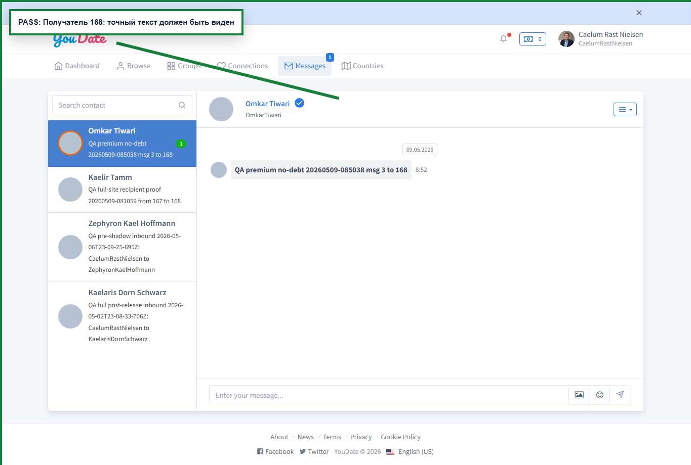
messageRecipient3
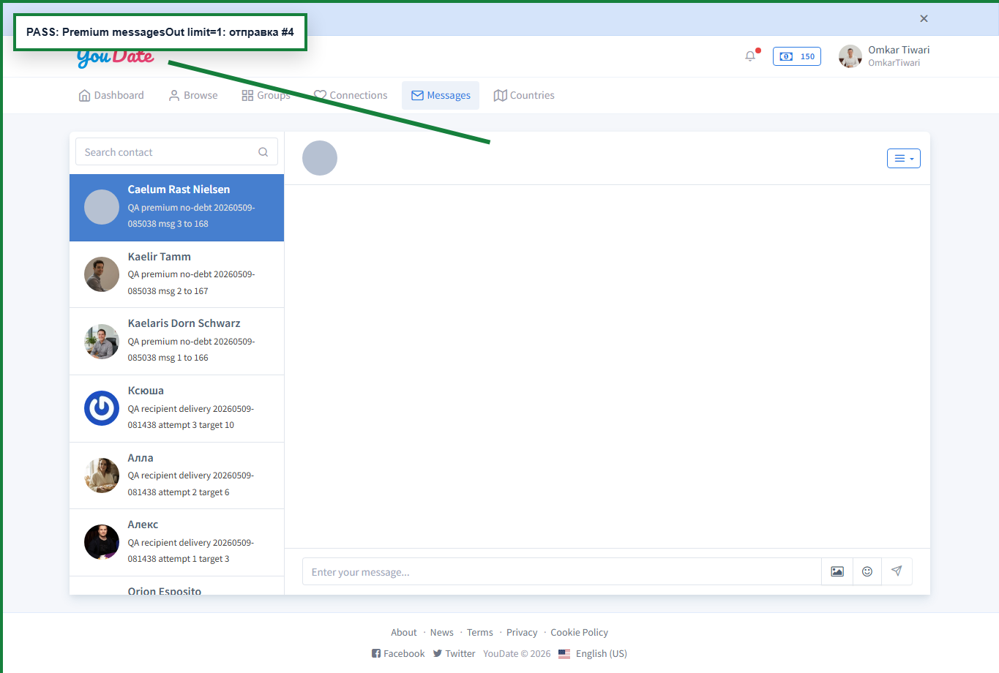
messageSend4messageRecipient4
FAILeditSentMessageOn должен показывать редактирование отправленного сообщения
Что тестировал: После отправки сообщения и включенного editSentMessageOn ищем редактирование прямо у сообщения отправителя.
Что получил: Чекбокс включен, но пользователь не получает видимого действия редактирования.
Как воспроизвести: Set editSentMessageOn=1, отправить сообщение, открыть /en/messages отправителем и искать edit/update/pencil action возле сообщения.
Где смотреть Игорю: User messages view/controller: должна появиться кнопка/route редактирования отправленного сообщения либо настройку надо убрать/переописать.
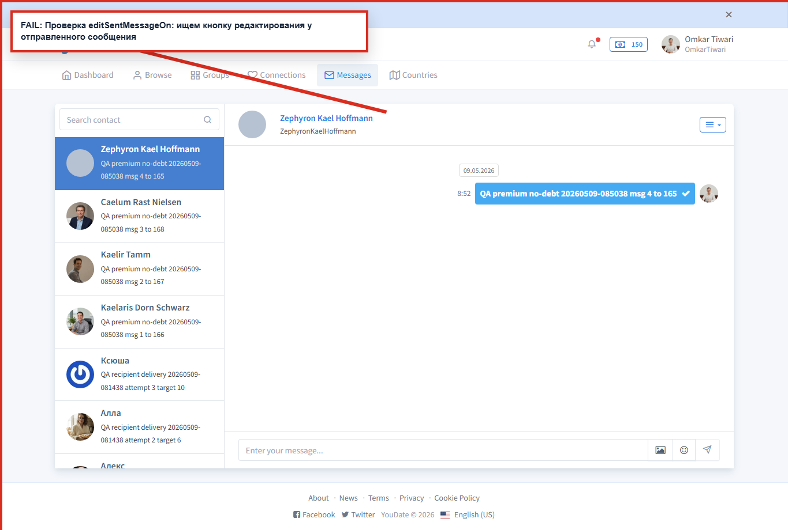
editSentMessageSender
FAILtimerInMutualOn должен показывать таймер в mutual likes
Что тестировал: Создана/обновлена mutual-like пара U182 <-> U184, открыт /en/connections/likes/mutual, проверены timer/expires markers.
Что получил: Чекбокс включен, но пользовательский таймер в mutual не доказан.
Как воспроизвести: Set timerInMutualOn=1, выполнить toggle-like в обе стороны, открыть /en/connections/likes/mutual.
Где смотреть Игорю: Mutual likes view/JS: если настройка должна показывать таймер, его нет на пользовательской странице.
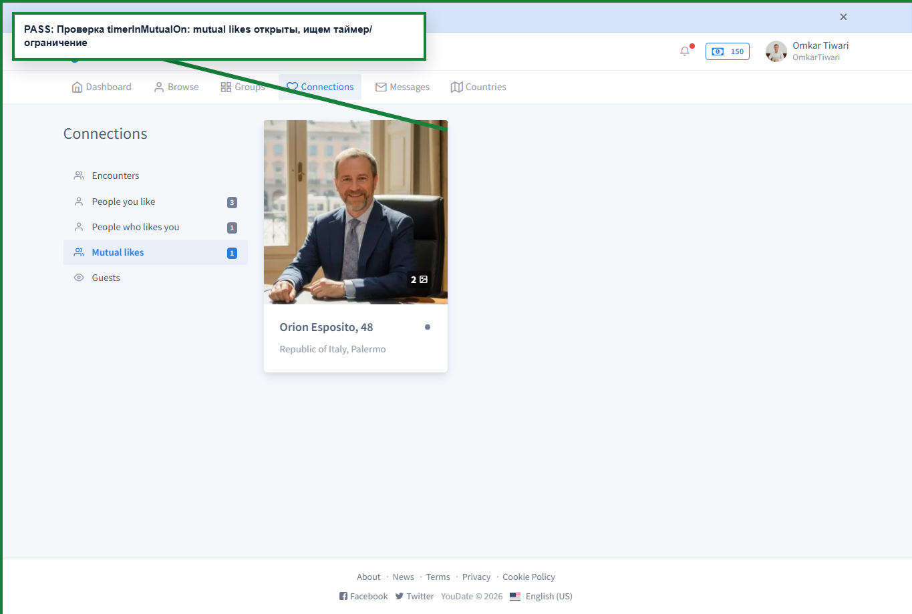
timerInMutual
PASSswipeBackOn показывает back/undo действие в encounters
Что тестировал: После включения swipeBackOn открыт /en/connections/encounters, в DOM ищется back/previous/undo action.
Что получил: Back action найден.
Как воспроизвести: Set swipeBackOn=1, открыть /en/connections/encounters и проверить кнопки/actions.
Где смотреть Игорю: Encounters view/JS: настройка включена, но back action не появляется или называется иначе без видимого UX.
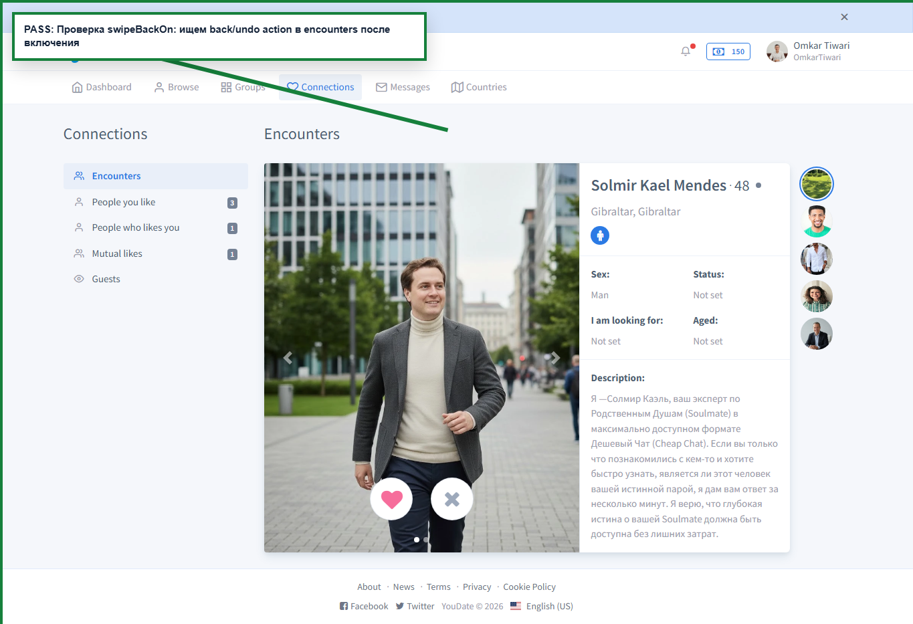
swipeBackSurface
FAILcountryPremiumPriceOn не меняет price nodes Premium services
Что тестировал: Сравнил пользовательскую страницу Premium services при countryPremiumPriceOn=1 и countryPremiumPriceOn=0.
Что получил: Настройка не меняет проверенные price/title nodes; прежний PASS был методической ошибкой сравнения полного body с QA overlay.
Как воспроизвести: Переключить countryPremiumPriceOn 1/0, открыть /en/balance/services#premium одним и тем же пользователем и сравнить видимые цены/страны.